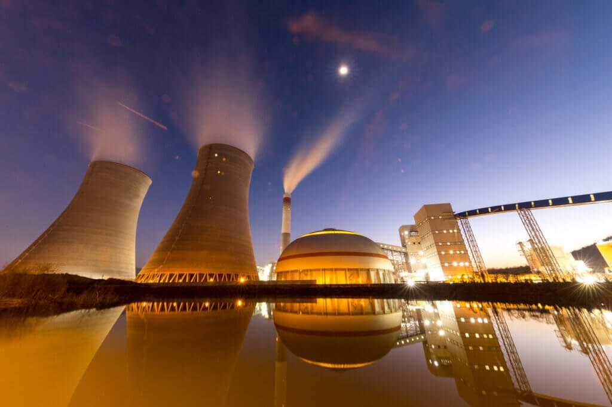

A geração de energia termelétrica é o processo de produzir eletricidade a partir do calor gerado pela queima de combustíveis fósseis, como carvão, petróleo e gás natural, ou pelo uso de outras fontes de calor, como biomassa ou energia geotérmica. Esse tipo de geração de energia é amplamente utilizado e pode ser classificado em diferentes tipos, dependendo da fonte de calor utilizada. Aqui está uma visão geral de como funciona: Como Funciona a Geração Termelétrica Queima de Combustível: Fonte de Calor: O processo começa com a queima de combustíveis fósseis (carvão, óleo, gás natural) ou biomassa em uma caldeira. Em usinas geotérmicas, o calor é extraído do interior da Terra. Produção de Calor: A queima do combustível produz calor intenso. Geração de Vapor: Caldeira: O calor gerado é usado para aquecer água em uma caldeira, transformando-a em vapor de alta pressão. Vapor: O vapor gerado é um meio de transporte do calor. Acionamento da Turbina: Turbina a Vapor: O vapor de alta pressão é direcionado para uma turbina, que é uma grande máquina com lâminas que giram quando o vapor passa por elas. Conversão de Energia Mecânica: A energia térmica do vapor é convertida em energia mecânica pela rotação da turbina. Geração de Eletricidade: Gerador: A turbina está conectada a um gerador, que converte a energia mecânica em eletricidade usando o princípio da indução eletromagnética. Distribuição: A eletricidade gerada é então enviada para a rede elétrica através de linhas de transmissão. Tipos de Usinas Termelétricas Usinas a Carvão: Utilizam carvão como combustível principal para gerar calor. Embora sejam eficientes, têm um alto impacto ambiental devido às emissões de dióxido de carbono e outros poluentes. Usinas a Gás Natural: Utilizam gás natural, que é uma fonte de energia mais limpa em comparação com o carvão. Essas usinas podem ser mais eficientes e emitir menos poluentes. Usinas a Petróleo: Usam óleo como combustível, mas são menos comuns devido aos custos e ao impacto ambiental em comparação com outras fontes. Usinas a Biomassa: Utilizam materiais orgânicos como madeira, resíduos agrícolas ou biocombustíveis para gerar calor. São uma alternativa renovável, mas a disponibilidade de biomassa pode limitar a capacidade. Usinas Geotérmicas: Aproveitam o calor interno da Terra. O calor geotérmico é usado para gerar vapor e, posteriormente, eletricidade. São uma fonte estável e renovável de energia.
Alta Capacidade de Geração: Capaz de gerar grandes quantidades de eletricidade, essencial para atender à demanda de grandes áreas urbanas e industriais. Versatilidade: Pode usar uma variedade de combustíveis e fontes de calor. Base de Carga: Pode fornecer eletricidade de forma constante e estável, complementando fontes de energia renovável intermitentes.
Impacto Ambiental: Queima de combustíveis fósseis contribui para a emissão de gases de efeito estufa e poluentes atmosféricos. Desafios de Sustentabilidade: O uso de combustíveis fósseis é limitado por questões de esgotamento dos recursos e mudanças climáticas. Custos Operacionais: O custo de combustível e a necessidade de manutenção das infraestruturas podem ser elevados. A geração termelétrica continua a desempenhar um papel crucial na matriz energética global, mas há uma crescente pressão para reduzir seu impacto ambiental e aumentar a eficiência, promovendo a transição para fontes de energia mais limpas e sustentáveis.
